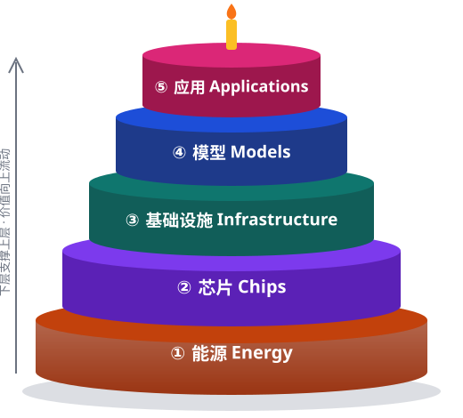

AI 时代的五层蛋糕是什么？What is the five-layer cake of AI?
NVIDIA 把 AI 产业比作一块五层蛋糕：从下到上依次是能源、芯片、基础设施、模型、应用。 每一层都依赖它下面的一层，而最终的价值在最顶层的应用中兑现。本站以这一框架为骨架，按国家持续整理各层的关键数据。 NVIDIA describes the AI industry as a five-layer cake. From the bottom up: energy, chips, infrastructure, models and applications. Each layer rests on the one below it, and the value is ultimately realized in the applications at the top. This site uses that framework to track the key data for each layer, country by country.

- ⑤ 应用 Applications
AI 落地到科学研究、医疗、制造、交通、金融、教育等具体场景，创造最终价值。 AI put to work in science, healthcare, manufacturing, transport, finance, education and more — where the final value is created. - ④ 模型 Models
大语言模型与多模态模型（如 DeepSeek、Qwen、豆包、ChatGPT、Claude、Gemini），把算力转化为“智能”。 Large language and multimodal models (DeepSeek, Qwen, Doubao, ChatGPT, Claude, Gemini…) that turn compute into intelligence. - ③ 基础设施 Infrastructure
数据中心（“AI 工厂”）、网络、散热，以及把电力送到机房的输电网。 Data centers (“AI factories”), networking and cooling, plus the transmission grid that delivers power to them. - ② 芯片 Chips
GPU / CPU / AI 加速器的设计、制造与进出口，决定单位能耗能产出多少算力。 Design, manufacturing and trade of GPUs, CPUs and AI accelerators — how much compute each unit of energy buys. - ① 能源 Energy
一切的地基：火电、水电、核电、风电、光伏等电力供给，决定 AI 能扩张到多大规模。 The foundation: power from fossil fuels, hydro, nuclear, wind, solar and more — it sets how far AI can scale.
国家列表Countries
每个国家一个子文件夹（countries/<国家>/），内含该国五层蛋糕数据。目前重点整理中国（中国大陆）与美国，其余国家陆续补充。
Each country has its own folder (countries/<country>/) with its five-layer data. China (mainland) and the United States come first; other countries will follow.